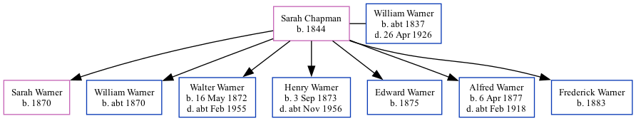

Sarah Warner (née Chapman) 1844 - [ Home ] | [ Calendar ] | [ Surnames Index ] | [ Family History ]Sarah Chapman , the wife of William Robert Warner (the three times great-uncle of Nigel Horne ), was born in St Peters, Thanet, Kent, England in 18441,2 and married William (a builder's labourer with whom she had 7 children: Sarah Jane , William Jesse , Walter Chapman , Henry John , Edward , Alfred Stephen and Frederick ) in St Peters on 6 Feb 18693 .
Throughout her life, Sarah lived in several places: at Burtons Cottages, St Peters, Thanet, Kent, England on 3 Apr 18815 ; on Magdala Road, St Peters in Thanet on 5 Apr 18916 ; at Rumfields, St Peters in Thanet on 31 Mar 19011 ; and at Holly Lodge, Rumfields, St Peters in Thanet on 2 Apr 19114 .
Children Sarah Jane was born in 1870William Jesse was born c. 1870Walter Chapman was born on 16 May 1872Henry John was born on 3 Sept 1873Edward was born in 1875Alfred Stephen was born on 6 Apr 1877Frederick was born in 1883Citations 1901 England, Wales & Scotland Census - Findmypast (was age 57 and the wife of the head of the household) England Marriages 1538-1973 - Findmypast Kent, Canterbury Archdeaconry marriages 1538-1928 - Findmypast 1911 Census for England & Wales - Findmypast (was age 67 and the wife of the head of the household) 1881 England, Wales & Scotland Census - Findmypast (was age 37 and the wife of the head of the household) 1891 England, Wales & Scotland Census - Findmypast (was age 47 and the wife of the head of the household) Media 1911 Census for England & Wales - GBC/1911/RG14/04509/0035/2 1881 England, Wales & Scotland Census - GBC/1881/0004870500 1891 England, Wales & Scotland Census - GBC/1891/0005914438 Family Tree Map
Generated by ged2site . Last updated on Feb 19, 2025